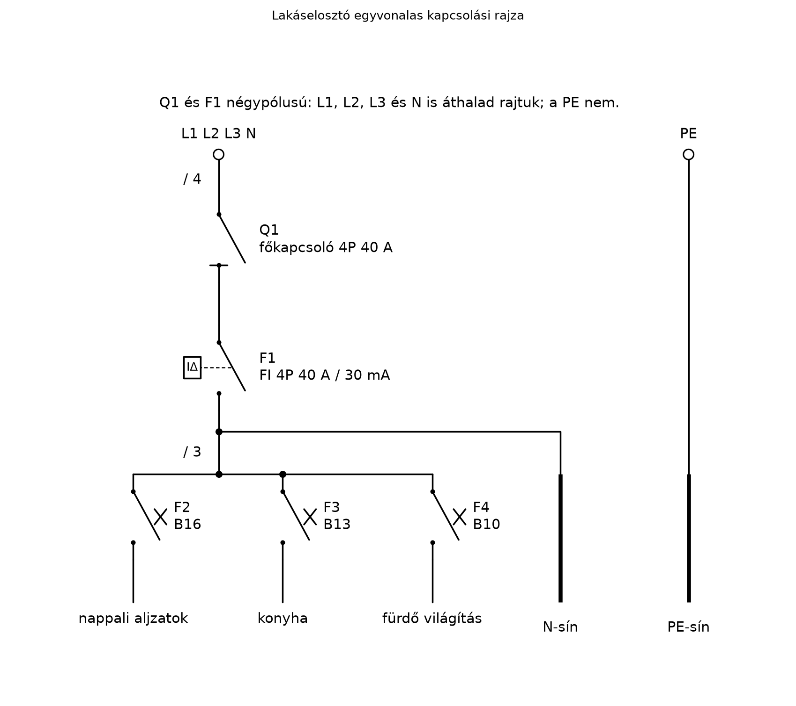

Egy lakásfelújítás során a villanyszerelő új lakáselosztót szerel. A megrendelő általában csak annyit lát, hogy a kismegszakítók sorban ülnek, a feliratok szépek és a kötések rendezettek. A szakember számára azonban az elosztó a villamos berendezés „központi idegrendszere”: itt találkozik a hálózati csatlakozás, a túláramvédelem, a hibavédelem és az áramkörök szétosztása. Ha a vezetékek rendezetlenek, a kötések nem megfelelő nyomatékkal húzottak, a feliratok hiányoznak, akkor a későbbi hibakeresés, bővítés vagy felülvizsgálat rémálommá válik, és a laza kötés tüzet is okozhat. Ebben az alfejezetben a kész elosztó szakszerű összeszerelését, a vezetékrendezést, a feliratozást és az átadás előtti ellenőrzést tanuljuk meg.
Az alábbi ábra egy lakáselosztó egyvonalas kapcsolási rajzát mutatja: bejövő táp, főkapcsoló, áram-védőkapcsoló (FI-relé), majd kismegszakítók, külön nulla- és védősínnel.

Az egyvonalas rajzon a három fázist és az N-et egyetlen vonal jelképezi („/ 4”); a FI után az N leágazik az N-sínre. A főkapcsoló és a FI-relé sorban követi egymást, a kismegszakítók viszont a FI utáni gyűjtőről párhuzamos ágakat táplálnak: minden áramkör a saját kismegszakítóján át kap feszültséget. A nulla- és védősínt külön jelöljük, mert a bekötéskor ezek elválasztása biztonsági követelmény: a FI-relé után a nulla már nem köthető össze a védővezetővel (TN-C-S rendszerben a PEN-t a hálózati engedélyes által elfogadott ponton – jellemzően a mérőhelyen vagy a főelosztóban – választják szét; ellenőrizendő: hálózati engedélyes műszaki feltételei).
Mielőtt a dobozba kerülne az első vezeték, a szerelőnek a terv és a készülékek összhangját ellenőriznie kell. A Lakás- és épületelosztó felépítése alfejezetben láttuk a készülékek kiválasztásának szempontjait; most a fizikai beépítés és a dokumentáció kerül sorra.
Szabály. Az elosztó szerelését mindig feszültségmentes állapotban kezdd, és a visszakapcsolást csak a teljes ellenőrzés után végezd. A feszültségmentesítés öt biztonsági szabálya kötelező: lekapcsolás, visszakapcsolás elleni biztosítás, feszültségmentesség ellenőrzése, földelés és rövidre zárás, szomszédos feszültség alatti részek lefedése.
Biztonsági korlát. A feladat tanműhelyi (törpefeszültségű) környezetre vagy jogosult oktató felügyeletére vonatkozik; hálózati feszültségen önállóan ne végezd.
Az elosztó szerelése előtt készítsük össze az anyagokat és szerszámokat:
A szerelési sorrendnek követnie kell a kapcsolási rajz logikáját, de a fizikai elrendezés miatt néhány gyakorlati szabályt be kell tartani.
Gyakorlati lépések (szerelési sorrend):
Figyelem. A vezetékek túlzott feszítése, éles hajlítása vagy a kapcsokba töltött csupasz ér felesleges hosszúsága melegedést, szigeteléssérülést és rövidzárlatot okozhat.
A csavaros kötések a villamos elosztók egyik leggyakoribb hibapontjai. A túl laza kötés átmeneti ellenállást növel, melegedést okoz, és hosszú távon tüzet idézhet elő. A túl szoros kötés deformálja a vezetéket, sértheti a kapocs menetét, és szintén megbízhatatlan csatlakozást ad.
Definíció. Névleges csavarnyomaték: az a gyártó által megadott, newtonméterben (N·m) kifejezett nyomaték, amellyel az adott kapocshoz tartozó vezetőt szakszerűen meg kell húzni. Értéke a kapocs méretétől, anyagától és a vezető keresztmetszetétől függ.
Szabvány. A kapcsokra vonatkozó csavarnyomaték-értékeket a készülékgyártó adja meg a készülék adatlapján vagy a kapocs melletti jelölésen. Általános tájékoztató érték (ellenőrizendő a gyártói adatlap): 2,5 mm² rézvezető esetén a kapocscsavarokra jellemző nyomaték 0,8–1,2 N·m, 4 mm² esetén 1,2–1,5 N·m, 10 mm² esetén 2–3 N·m. A pontos érték eltérhet, ezért a gyártó dokumentációját mindig ellenőrizni kell.
Példa. Egy elosztó sorkapcsába 2,5 mm²-es vezetőket kell bekötni. A kapocsgyártó adatlapja szerint a megfelelő nyomaték 1,0 N·m. A szerelő a nyomatékkulcsot 1,0 N·m-re állítja, és minden egyes csavart ezzel húz meg, amíg a kattanás jelzi a beállított értéket. Ha nincs nyomatékkulcs, nyomatékcsavarhúzót (beállítható nyomatékú csavarhúzót) használj; a gyártók a megadott nyomaték betartását írják elő, ezért elosztóban a nyomatékszerszám használata a jó gyakorlat (ellenőrizendő: gyártói szerelési utasítás).
Szabály. Minden csavarkötés meghúzása után végezz utólagos ellenőrzést enyhe ellenőrző nyomatékkal vagy a vezető mozgatásával. A kapocstakaró felhelyezése előtt ellenőrizd, hogy a csupasz ér nem lóg ki a kapocstérből, és a szigetelés nem nyúlik-e be a kapocsba.
A feliratozás nem kényelmi kérdés, hanem a biztonságos üzemeltetés és a gyors hibakeresés feltétele. A feliratnak egyértelműen azonosítania kell az áramkört és a készüléket.
Szabály. Minden kismegszakító felett vagy alatt szerepeljen az áramkör megnevezése, például: „F2 – Nappali aljzatok”, „F3 – Konyha dugalj”, „F4 – Fürdőszoba világítás”. A felirat tartós legyen (nyomtatott címke vagy gravírozott tábla), ne filctollal írt papír.
Szabvány. Az elosztóban elhelyezett feliratoknak és az áramkörjegyzéknek meg kell egyezniük az átadási dokumentációval és a kapcsolási rajzzal. Az egyvonalas rajzot a tabló belső oldalára vagy annak közelébe kell rögzíteni, hogy a későbbi szerelő azonosítani tudja az áramköröket (ellenőrizendő: MSZ HD 60364 sorozat előírásai).
Áramkörjegyzék példa: (A kismegszakítót és a FI-t a gyakorlatban F vagy Q betűjellel is jelölik, MSZ EN 81346-2; a Lakás- és épületelosztó felépítése alfejezet Q2/Q3–Q5 jelöléseket használ. Egy dokumentáción belül egységesen kell eljárni.)
| Készülék | Típus/érték | Áramkör | Vezeték keresztmetszet |
|---|---|---|---|
| Q1 | Főkapcsoló 4P, 40 A | Bejövő táp | 5×10 mm² |
| F1 | FI-relé 40 A / 30 mA | Általános védelem | – |
| F2 | Kismegszakító B16 | Nappali aljzatok | 3×2,5 mm² |
| F3 | Kismegszakító B13 | Konyha dugalj | 3×2,5 mm² |
| F4 | Kismegszakító B10 | Fürdőszoba világítás | 3×1,5 mm² |
Továbbvitt eredmény. Az itt bemutatott feliratozási és dokumentációs rend a Kötések, sorkapcsok, csavarnyomaték és ellenőrzés és a Lakáselosztó építése és bekötése gyakorlatokban tér vissza; a szerelés–mérés–dokumentálás lánc minden lépése erre a rendre épül.
Az elosztó átadása előtt teljes körűen ellenőrizni kell a szerelést. Ez a szemrevételezésből és mérésekből áll.
Gyakorlati recept: átadás előtti ellenőrzőlista
Mérési szempontok. Az átadás előtti mérések nem helyettesítik a hatósági vagy szabványossági felülvizsgálatot, de fontos előszűrést adnak. A védővezető folytonosságát kis áramú ellenállásméréssel, a szigetelési ellenállást 500 V-os szigetelési ellenállásmérővel kell végezni. A mért értékeknek a hatályos szabvány szerint kell megfelelniük (ellenőrizendő: MSZ HD 60364-6 szerinti határértékek).
Cél: egy lakáselosztó szakszerű bekötése, feliratozása és átadás előtti ellenőrzése tanműhelyi környezetben.
Eszközök és anyagok: lakáselosztó doboz, DIN-sínes készülékek (főkapcsoló, FI-relé, néhány kismegszakító), N- és PE-sín, vezetékek (1,5 és 2,5 mm²), érvéghüvelyek, jelölőgyűrűk, csavarhúzók, nyomatékkulcs, lehúzó, krimpelő, multiméter, szigetelési ellenállásmérő, feszültségvizsgáló, feliratok.
Biztonsági korlát. A feladat tanműhelyi (törpefeszültségű) környezetre vagy jogosult oktató felügyeletére vonatkozik; hálózati feszültségen önállóan ne végezd. A munkavégzés előtt mindig alkalmazd a feszültségmentesítés öt biztonsági szabályát.
Lépések:
Ellenőrzési pontok: a vezetékek színhelyesek, a FI-relé utáni nulla nem keveredik a védővezetővel, a csavarkötések nem lazák, a feliratok egyértelműek, a mérési értékek a szabvány szerint megfelelőek.
Dokumentálás: készítsd el a kapcsolási rajzot, áramkörjegyzéket, mérési jegyzőkönyvet; ezeket fűzd a szerelési naplóhoz.
Valós életbeli alkalmazás. Egy lakásban a fűtőbetét áramköre (F5, B16; az F5 az áramkörjegyzék példájában nem szerepel) időnként leoldott, de a betét jó volt. A szerelő megbontotta az elosztót, és azt tapasztalta, hogy a kismegszakító alsó kapcsánál a fázisvezető érvéghüvelye melegszik, a kapocs körüli műanyag enyhén elszíneződött. A hiba oka: a csavart nem a megfelelő nyomatékkal húzták meg, a kötés átmeneti ellenállása megnőtt, és a rajta keletkező hő a kismegszakítót is melegítette, ami a hőkioldó érzékenységét eltolva időnként leoldott.
Hibakeresési lépések:
1. feladat (A) Sorold fel a lakáselosztó szerelésének 5 fő lépését.
2. feladat (A) Mi az áramkörjegyzék, és milyen adatokat tartalmaz?
3. feladat (B) Egy kapocs gyártói adatlapja szerint a 2,5 mm²-es vezetőre 1,0 N·m nyomatékot kell alkalmazni. A szerelő nyomatékkulcsa nincs kalibrálva. Mit kell tennie, és miért?
4. feladat (B) Adott egy 3×2,5 mm²-es kábel, külső átmérője 11 mm. Mekkora a minimális belső hajlítási sugár, ha a kábelgyártó a 4D hajlítást engedélyezi? (D a kábel külső átmérője.)
5. feladat (C) Egy elosztóban a FI-relé leold, ha a fürdőszobai világítást bekapcsolják. A hibakeresés során kiderül, hogy a világítási áramkör nulla vezetékét a FI-relé utáni N-sínre kötötték, de a fázisvezetőjét a FI-relé előtti fázisgyűjtőről táplálták. Magyarázd el, miért old le a FI-relé, és hogyan javítanád a hibát.
6. feladat (D) Tanműhelyi gyakorlat: építs egy lakáselosztó modellt egy főkapcsolóval, egy FI-relével és két kismegszakítóval (pl. világítás, aljzat). A bekötés után végezd el a védővezető folytonosságának mérését, és dokumentáld az áramkörjegyzékben a vezetékek színét és keresztmetszetét. Írd le a mérés lépéseit és a várt eredményt.
Önellenőrzés – válaszok
1. feladat (A)
A fő lépések: (1) feszültségmentesítés és biztosítás, (2) készülékek és
sínek felszerelése, (3) vezetékek előkészítése és bekötése, (4)
csavarnyomaték ellenőrzése, (5) feliratozás és mérések.
2. feladat (A)
Az áramkörjegyzék a készülékek és az áramkörök azonosítását szolgáló
táblázat. Tartalmazza a készülék jelét (pl. F2), típusát/értékét (pl.
B16), az áramkör megnevezését (pl. nappali aljzatok) és a vezeték
keresztmetszetét.
3. feladat (B)
Ha a nyomatékkulcs nincs kalibrálva, nem használható megbízhatóan, mert
a beállított nyomaték nem garantált. A szerelőnek kalibráltatnia kell a
kulcsot, vagy másik, kalibrált nyomatékkulcsot kell használnia. A nem
megfelelő nyomaték laza vagy túl szoros kötést okoz, ami
balesetveszélyes.
4. feladat (B)
A minimális belső hajlítási sugár
.
Tehát a kábelt legalább 44 mm belső sugárral kell hajlítani.
5. feladat (C)
A FI-relé a fázis- és a nullavezető áramainak különbségére érzékeny. Ha
a fázist a FI elé kötik, a nullát pedig a FI után, akkor a FI-n csak az
áramkör N-vezetője halad át, a fázisáram megkerüli. A FI ezért a teljes
visszatérő terhelőáramot differenciaáramnak látja: pl. 100 W-os
világításnál
,
ez a 30 mA-es küszöb sokszorosa, így a FI bekapcsoláskor azonnal kiold.
Javítás: a világítás fázisát is a FI-relé utáni fázisgyűjtőről kell
táplálni, hogy az áramkör mindkét pólusa a FI-relén át haladjon.
6. feladat (D)
A várható mérési lépések: feszültségmentesítés, a védővezető
folytonosságának mérése a fő földelőkapocstól a fogyasztói
védőérintkezőig. A mérésnek alacsony ellenállást kell mutatnia
(általában <1 Ω, a vezeték hosszától és keresztmetszetétől függően).
A dokumentációban rögzíteni kell a mért értéket, a mérési pontokat és a
műszer típusát.
Az elosztó szakszerű szerelése a biztonságos üzemeltetés és a későbbi hibakeresés alapja. A szerelési sorrend a feszültségmentesítéssel kezdődik, majd a készülékek felszerelése, a vezetékek előkészítése és bekötése következik. A védővezetőket, a nullavezetőket és a fázisokat meghatározott sorrendben, előírt csavarnyomatékkal kell bekötni; hajlékony vezeték esetén érvéghüvely kötelező. A vezetékek hajlításánál be kell tartani a minimális hajlítási sugarat. A feliratok és az áramkörjegyzék biztosítják az áramkörök azonosítását; az egyvonalas rajzot a tabló belsejében kell elhelyezni. Átadás előtt szemrevételezést és méréseket kell végezni: védővezető-folytonosság, szigetelési ellenállás, FI-relé teszt. A laza csavarkötés tipikus hibája a melegedés és a téves kioldás, ezért minden kötést ellenőrizni kell. Továbbvitt eredmény: a szerelés–mérés–dokumentálás lánc a Kötések, sorkapcsok, csavarnyomaték és ellenőrzés és a Lakáselosztó építése és bekötése alfejezetekben tér vissza; az itt tanult módszerek ott kerülnek gyakorlati alkalmazásba.
A szöveg a Magyarországon érvényes villamos szerelési gyakorlatra, az MSZ HD 60364 sorozatra és a gyártói adatlapokra épül. A konkrét csavarnyomaték-értékek tájékoztató jellegűek, a készülékgyártó adatlapját mindig ellenőrizni kell. A mérési határértékek és a hajlítási sugarak a hatályos szabványoktól és gyártói előírásoktól függnek, ezért a pontos értékeket az adott kivitelezés előtt ellenőrizni kell. A jogszabályi kötelezettségeket (pl. felülvizsgálat, mérési jegyzőkönyv) a hatályos előírások szerint kell alkalmazni.